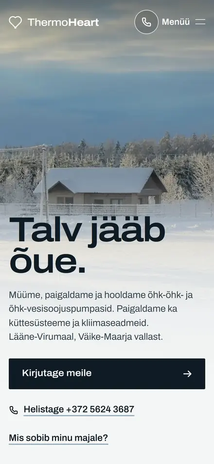

Küte, ventilatsioon, soojuspumbad
Koduleht kütte-, ventilatsiooni- ja soojuspumbafirmale
Sellise teenuse klient tahab enne helistamist aru saada, mis talle sobib: soojuspump või katel, soojustagastusega või tavaline ventilatsioon, mis see umbes maksab. Vilniuse firmale Ventsistema tegin kodulehe ventsistema.lt interaktiivse 3D-soojustagasti ja õhuvahetuse kalkulaatoriga, Väike-Maarja ThermoHeartile esimese versiooni. Teie firmale teen esimese versiooni tasuta; maksate ainult siis, kui see meeldib: alates 300 € ühekordselt.
- alates 300 €
- ühekordselt
- 24 h
- tasuta esimene versioon
- 0 €
- kuutasu

01Mida näidata
Mida kütte- ja ventilatsioonifirma koduleht peab näitama
Need osad aitavad kliendil valida ja teil saada päringuid, milles on juba olemas see, mida on vaja hinnapakkumiseks.
Süsteemid, mida paigaldate
Õhk-vesi ja õhk-õhk soojuspumbad, katlad, soojustagastusega ventilatsioon, konditsioneerid, küttesüsteemid. Igaühel oma plokk: kellele see sobib ja kuidas paigaldus käib.
Kaubamärgid ja tunnistused
Seadmete tootjad, kellega töötate, ja paigaldaja tunnistused. Klient otsib sageli just kaubamärgi järgi.
Selgitus või kalkulaator
Lihtne arvutus või skeem aitab kliendil valikust aru saada juba enne kõnet. Ventsistema.lt-l on õhuvahetuse kalkulaator ja 3D-soojustagasti.
Objektid fotodega
Paigaldatud seadmed kodudes ja ettevõtetes, koos linna ja lühikirjeldusega.
Hooldus ja garantii
Kui teete hooldust, tasub see eraldi välja tuua: klient teab, kuhu aasta pärast pöörduda.
Toetused
Kui kliendid saavad soojuspumbale või renoveerimisele riiklikku toetust, aitab lühike viide programmile otsust teha.
02Näited
Kütte- ja ventilatsioonifirmade kodulehed, mille olen teinud
Ventsistema.lt töötab firma enda domeenil. ThermoHeart ja Тепломагія on esimesed versioonid päris ettevõtetele, tehtud nende avalikest fotodest ja tekstidest.
-
vasylian.com/thermoheart-ee
ThermoHeart
-
ventsistema.lt
Ventsistema
Soojustagastusega ventilatsioon Vilniuses aastast 2005. Viis lehte oma domeenil: interaktiivne 3D-soojustagasti, õhuvahetuse kalkulaator, soojuspumbad, seadmete kaubamärgid ja fotod valminud objektidest.
-
vasylian.com/teplomagia
Тепломагія


03Kuidas see käib
Kuidas see käib
Neli sammu. Kõik käib kirjalikult ja teie keeles.
- 01
Ütlete, mis ettevõttega on tegu
Vastake minu kirjale või kirjutage mulle: nimi, linn ja mida teete. Abiks on link Facebooki lehele, Google Mapsi kirjele või vanale kodulehele.
- 02
Ööpäeva jooksul saate lingi
Teie avalehe esimene versioon, tehtud just teie ettevõttele: nimi, teenused, fotod ja kontaktid. See ei maksa midagi.
- 03
Meeldib: koduleht läheb teie domeenile
Panen lehe teie domeenile ja aitan selle ühendada. Tekste ja fotosid saate ise muuta.
- 04
Maksate ühe korra, pärast käivitamist
Alates 300 €, ilma kuutasuta. Kui esimene versioon ei meeldi, ei maksa te midagi.
04Hind
Ühekordselt, kogu kodulehe eest. Kuutasu ei ole.
Maksate pärast seda, kui koduleht töötab teie domeenil. Kui esimene versioon ei meeldi, ei maksa te midagi.
Sisaldab
- Avalehe tasuta esimene versioon enne igasugust makset
- Terve koduleht, kuni 5 lehekülge
- Telefonile mõeldud ja kiire
- Teie keeles
- Kõik failid ja lähtekood
- Kuu aega tasuta parandusi
- Abi domeeni ja majutusega
- E-post, WhatsApp, Viber
Kodulehtalates 300 €, ühekordselt
Majutus0 €
Domeenumbes 10 kuni 15 € aastas
Kuutasu0 €
05Küsimused
Korduma kippuvad küsimused
Kui palju maksab kütte- või ventilatsioonifirma koduleht?
Alates 300 € ühekordselt kogu kodulehe eest, kuni 5 lehte. Kuutasu ei ole. Domeen maksab umbes 10 kuni 15 € aastas, selle maksate registripidajale ise.
Kas saab lisada kalkulaatori või 3D-mudeli?
Jah, nagu Ventsistema.lt-l. Sellise tööriista hinna ütlen ette, sõltuvalt sellest, mida see peab arvutama.
Kas võin näidata seadmete kaubamärke?
Jah, nende tootjate nimesid ja logosid, kellega töötate paigaldaja või edasimüüjana. Võõraid fotosid teie objektidena ma ei näita.
Meil on palju teenuseid. Kas 5 lehest piisab?
Sageli piisab: üks selgete osadega teenuste leht töötab paremini kui kümme tühja lehte. Kui on vaja rohkem lehti, ütlen hinna enne tööd.
Kui kiiresti?
Avalehe esimese versiooni saadan 24 tunni jooksul. Kui kõik on korras, panen kodulehe teie domeenil tööle.
06Alusta
Kirjutage oma ettevõttest
Lisage oma firma ja linn ning saatke sõnum. Vastan päeva jooksul, teie keeles. Helistada pole vaja.
Tere, Artur! Soovin oma firmale kodulehe tasuta esimest versiooni. Ettevõte: ... Linn: ...